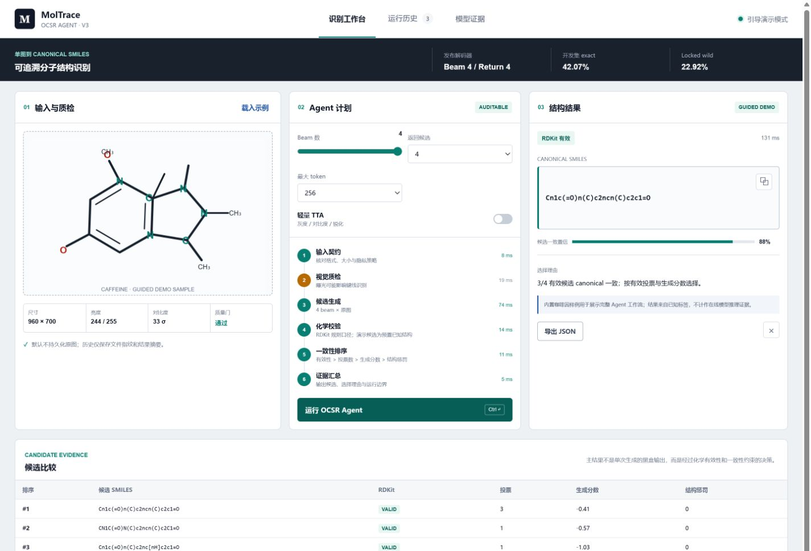
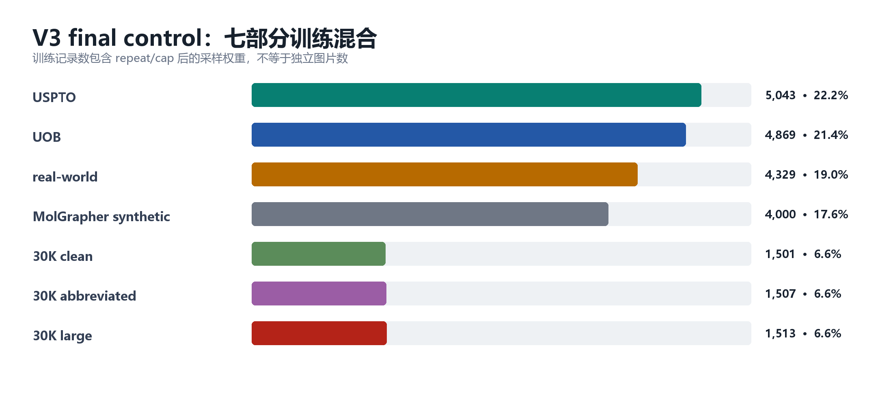
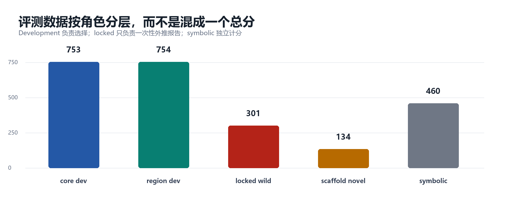
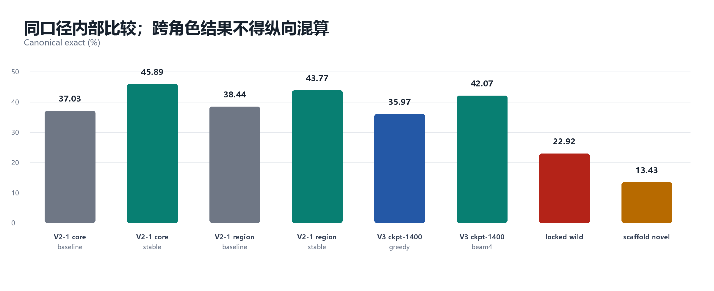

冻结任务契约
单图、单分子、canonical SMILES；symbolic 独立分轨。
PADDLEOCR-VL · OCSR · V3 FINAL
从科学数据构建、V2-1/V3 训练与后训练，到可审计 Agent 前后端的完整决赛交付。
最终模型：checkpoint-1400 · beam4/return4 · locked test 只运行一次 · 2026-07-20

PROJECT WORKFLOW
单图、单分子、canonical SMILES；symbolic 独立分轨。
七个语义组按可信度、覆盖和吞噬风险配比。
development 负责选；paper-group locked 负责答。
LoRA continuation，同基座、同预算、双 seed。
checkpoint、hard replay、beam、rerank 都可被拒绝。
真实前后端、模型包、报告、PPT、GitHub/HF。
证据总表：V3/evidence/FINAL_RESULTS.json；完整报告：数据构建报告_V3_final.docx
TASK CONTRACT
Cn1c(=O)n(C)c2ncn(C)c2c1=O一行、单分子、RDKit 可解析、canonicalization 幂等；没有解释文字和第二答案。
任务实现：V3/scripts/build_v3_datasets.py；评测：evaluate_ocsr_predictions_detailed.py
DATA PIPELINE
dataset_build_report.json；wild_paper_group_split.jsonl；DATA_LICENSES_AND_ATTRIBUTION_zh.md
SEVEN-PART MIXTURE

记录数包含 repeat/cap 后的训练权重；不是独立图片数。来源：mixture_counts.csv、dataset_build_report.json
MIXTURE RATIONALE
V3/TRAINING_DATA_AND_FINETUNING_REPORT_zh.md；probe_analysis.json
EVALUATION ROLES

评测集数据构建报告_V3_final.docx；V3/runbooks/EVALUATION_PROTOCOL_zh.md
LEAKAGE CONTROL
同一分子的不同渲染不是独立样本；用 canonical / structure_id 反向去重。
同论文字体、压缩、版式高度相关；先留整篇论文，再每篇最多 5 图。
模型、prompt、checkpoint、decoder、labels hash 全部冻结后才运行。
wild_paper_group_split.jsonl；dataset_build_report.json；locked_test_manifest.sha256
V2-1 TO V3
同预算 warm-start 在两个 development 面板 exact 均为 0，尚未建立 canonical 输出能力。
Core baseline → stable；region 38.44% → 43.77%。这些是历史 development，不冒充 locked test。
从已学会 OCSR 的 V2-1 继续训练，把预算用于配比、seed、checkpoint 与后训练。
BASELINE_V2_1.md；V3 EVAL_DATASET_CONSTRUCTION_REPORT_zh.md；不同面板禁止纵向混算
2 × 2 × 2 FACTORIAL
probe_analysis.json；probe_paired_summary.md；configs/probe_*.yaml
CHECKPOINT SELECTION
final_checkpoint_selection.json；final_checkpoint_eval_summary.csv
POST-TRAINING DECISIONS
最终权重基准。单候选快，但局部字符歧义容易过早提交。
BASELINE相对 final −0.73pp，并伴随 validity 回退；“更难样本”没有转化成收益。
REJECTED相对 greedy +6.10pp；两个 development 面板 paired cluster CI 均高于 0。
ADOPTEDfinal_vs_hard_replay.json；generation_policy_beam_selection.json；generation_policy_selection.json
LOCKED FINAL TEST
301 图 / 301 分子 / 62 篇论文
大量输出化学上有效，但键级/位置仍可能错
134 个训练未见骨架
新骨架 + 论文域移是最难组合

V3/evidence/FINAL_RESULTS.json；locked test 结果不回流训练、prompt、beam 或候选排序
MOLTRACE OCSR AGENT
真实浏览器验收：1440×1050 与 390×844 均无横向溢出；4 个候选、6 步 trace 正常渲染；Node tests 5/5
FRONTEND + BACKEND
拖放、预览、质量门、参数、历史、JSON 导出。
零 npm 运行依赖；大小限制、隐私与状态探针。
固定调用已有 infer_ocsr_transformers.py。
beam4/return4，可选轻量 TTA，多候选召回。
解析、canonical、片段、dummy 与结构惩罚。
候选、投票、分数、选择理由、边界和耗时。
源码：V3/agent_demo/；API：/api/health、/api/model、/api/agent/run、/api/validate、/api/history
RELEASE EVIDENCE
训练/推理/评测脚本、QC、runbook、报告、PPT、MolTrace Agent 前后端与测试。
可加载模型目录、模型卡、权重与 tokenizer；本地 ZIP 额外附 README 和 SHA256SUMS。
GitHub commit 与最终压缩包 SHA256 在发布完成后写入最终交付清单
CONCLUSIONS AND LIMITATIONS
下一步：4+ seed confirmatory、授权实拍 locked、多尺度视觉增强、专用 symbolic decoder、模型常驻服务
QUESTIONS & ANSWERS
每个数字都能回到 JSON/CSV/config/log/hash；每个限制都保留在报告、模型卡和数据卡中。
GitHub: github.com/2658183739/-PaddleOCR-VL-1.5-OCSR · HF: huggingface.co/L2658183739/PaddleOCR-VL-1.5-OCSR